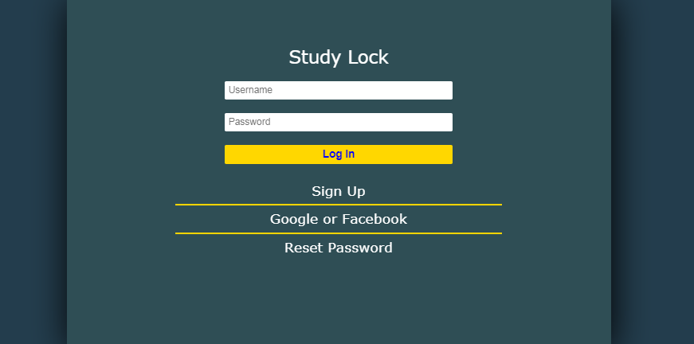
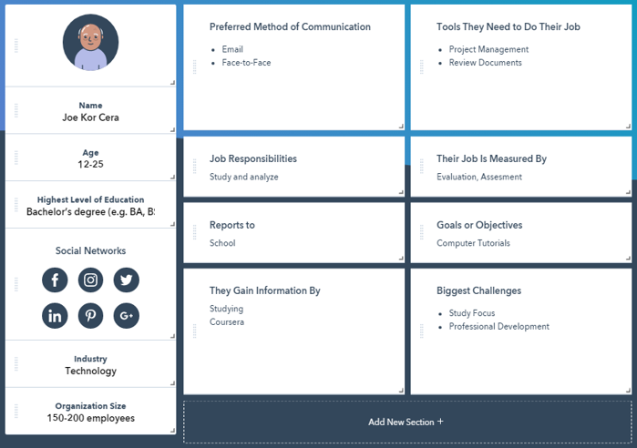
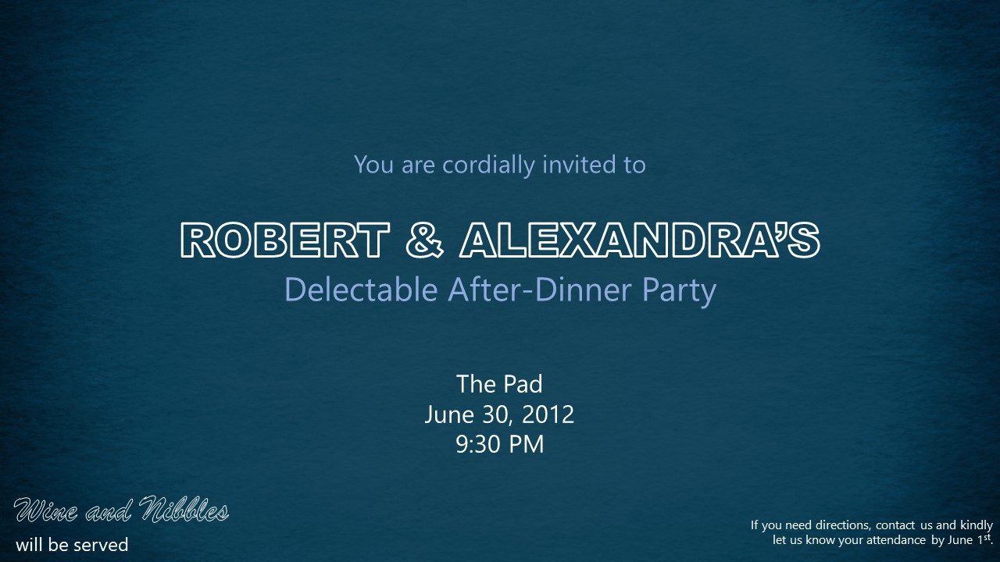

Blank
Activity 1: Tell Me About Yourself
Good day! My name is Brent Millen P. Manzo, 19 years old residing at Taguig City. I stayed there with my family ever since I was born and had most of my experiences in that city. From pre-school to junior high school, I went there for school and only just now for college, I went to another city which is Makati.
To explore a new place is something I really want to do always. I get to meet new people and make new friends. Most of my closest friends now come to the same college. Also, I was able to pursue my passion for dance in this college after getting in the school's official dance varsity. From then, I started participating in trainings inside and outside the team.
Over the summer, I had workshops and performed in a recital. The team also gave me the chance to teach for the first time in an open class. It was a great summer experience for me as I was able to improve in my passion and share what I know as well. It was fulfilling for me and I will certainly do it again given the chance.
Knowing that the subject title has something to do with design and user interface, I expect to learn how to effectively make a design for programs that will allow me to efficiently make interactions with users. I am really excited for what is up for us in this subject because this appeals as something new for me in my chosen course.
Submitted 2019 July 3, 2:57 PM
Activity 2: Favorite App
Shazam
Shazam is an app that allows you to identify music with the press of a button. It records the song playing and then gives you all the details about the song including the artist, album and year released.
I found this really convenient because I am able to know immediately some songs that have inaudible lyrics or those that plays for just a short time. As a dancer, I often catch vibes with some songs in public such as in restaurants, coffee shops, groceries and other places which plays some music.
Submitted 2019 July 17, 3:58 PM
- Other App Features
- - Preview songs with Apple Music and add them to Apple Music and Spotify playlists
- - View music lyrics and YouTube videos for the songs you Shazam
- - Auto Shazam can recognize songs in the background after you've left the app
- - Visual recognition also works as a code reader for all QR codes
- and many other more cool features!
Activity 3: How would you design an interface for a 1000 floor elevator?
- Layout
- - provide a keypad for numbers from 0-9
- - small display screen
Upon entering the elevator, the user will simply type the floor destination using the numbers and will be ask to confirm afterwards. The floor number entered will then be displayed on the side so that others passengers may see the stops of the elevator. For instance, a passenger enters a floor nearer than the first queued, it will be put as stop before the first one. In short, it will prioritized floors according to level, depending on whether it is going up or down, and not by first queued floor.
Activity 4: Needfinding
Problem: Smartphones tend to be distractive while learning because of the connectivity it offers. The presence of smartphones affect the productivity of users as one tries to check notifications to stay connected from time to time. “Our phones are not just static, there are smart people behind it trying to get our attention. Everyone is fighting for our attention to turn it into profit.” (Nikola, D. 2017)
- App Solution: Study Lock
- - Complete lock: Locks all of the phone’s functionalities(excluding incoming calls) and hides notifications for a certain time set by the user.
- - Partial lock: Locks selected apps and its notifications for a certain time set by the user.
- - Attach your review material before setting a lock to generate a questionnaire after the study session.
Activity 5: Initial Prototype - Registration and Login Forms
- App Solution: Study Lock
Blank
Activity 6: Persona
 Good day! My name is Brent Millen P. Manzo, 19 years old residing at Taguig City. I stayed there with my family ever since I was born and had most of my experiences in that city. From pre-school to junior high school, I went there for school and only just now for college, I went to another city which is Makati.
Submitted 2019 August 19
Activity 7: Information Design
Shazam
 "You are cordially invited to Robert and Alexandra’s delectable after-dinner party. Wine and nibbles will be served. When: June 30th, 2012 at 9:30pm. Where: the pad. If you need directions, ping us. Kindly let us know if you’ll be attending by June 1st."
Submitted 2019 August 26
- How can we improve this?
- - Add design and color related to the theme
- - The information can be clustered to specific groups.
- - Usage of proper punctuation.
- - The information is about an invitation to a party.
- - Hierarchy of information should be present
- R1
- R2
- R3
- R4
Reflection 1: First Week of USERDES Class
From the first meeting of this course subject, I was already expecting something else because it will be another major subject that focuses on programming. Every time I will get the chance to program, I become excited and I look forward to it. But so far, we are still having an intro for the subject and concept building about design.
Our activities from the past meetings had been very interesting and made me want to design a program already. Also, I was able to understand the word design in general and in technical terms. I comprehended that design is more about planning for creating something and this is what I answered during that discussion.
I am really looking forward to designing of an actual program which is happening soon. This recent task that asks us to create a web design for our first activity will be my starter for learning program designing. I hope mine turns out well organized and something innovative in design.
Submitted 2019 July 14, 1:33 AM
Reflection 2: Need Finding and Paper Prototyping
On to our second week, I can say that I am learning more. This course subject has widen my knowledge on design by going back to fundamentals. On the previous week, we tried to define design in order for us to understand it more. This week, we got introduced to a term called need finding. Need finding focuses more on knowing what are the needs of the people currently. This idea of gathering information about what is needed makes accurate decisions for design basis. When we design according to demand, we get to be more efficient in making something because it is made according to what is currently needed.
Having this concept made me realized that it is not only applicable to design, but also to decision making in our daily lives. We can focus more on what is needed rather than what we just wanted in order for us to make more sense. We must first prioritize our needs in order for us to improve efficiently but we should still give ourselves what we want from time to time.
Another thing we did for this week is the paper prototyping. I was already able to do prototyping but using a web app that allows us to make an actual prototype of an app. What we did on the paper is more like a wireframe of an app. Illustration of app visuals allows a developer to see an image of a desired app. In this way, they can identify how to make it work and interactive in design.
Submitted 2019 July 15, 12:07 AM
Reflection 3: First Web Application using Github and Heroku
For this week, I am starting to understand the flow of our lessons as we proceed to making our basic website. We were able to translate our introduction activity before as a website and it is something that I am really into. I find it interesting to program anything whether it is for frontend or backend of a program. For this certain activity we focused more on the frontend as expected for a user interface design class. Although this is not my first time making one because I already made several web applications before for projects so this could be my first only for this specific subject.
At first, I just want to recycle a web application we did before in senior high school. I kind of thought that the information I have for this specific activity will fit to my existing project before. It would be easier for me because I just have to revise the details of the project and I will be done faster. But then I realized, it would be better if I try to do a new one for me to refresh my knowledge in web programming, specifically dealing with HTML. It turns out that I was not wrong. I encountered several code errors that I was not sure if I already had before. Also, I was able to discover easier techniques in organizing the whole code and compiling it in an efficient way. This includes compiling of assets such as CSS, images and javascript. I was also able to manually install bootstrap and fontawesome in the web app which helped me debug the webpage faster because I do not need to import a web library every time I will run the app.
On our future development of our webpages, I look forward to more techniques I can discover along the way as I try to understand more libraries and not just import them. My goal is not just to copy others’ existing knowledge on web design but also, to make my own out of scratch.
Submitted 2019 July 30, 12:04 AM
Reflection 4: Userinyerface - Worst UI Practice
For this specific activity, I honestly had a hard time right at the start of this quiz. There are so many things that are not usual upon opening the website such as buttons and labels for sign up or login. I was so confused on how to navigate the web app because it is designed in a way that it will confuse us users. I thought I already meet the username and password requirements and it was not just loading for a while. But after sometime, I realized that my entry is invalid and I ended up trying several passwords that might be accepted as a valid one. After several attempts, I did not really remembered what I entered and I was just accepted.
The first part already took up 4 mins of my time and I was just worried that I might get a low score for this said quiz. When one of my classmates asked about the time and confirmed that the first attempt will be understandable to take us long, I just continued. I finished the quiz after 7 mins and did not bother to take a second attempt. For me, the first one is already enough because taking it again won’t make sense to me because I already know how to solve this puzzle-like sign-up process.
In conclusion, this activity told us what to avoid when making a user-interface. We must take from the quiz what is confusing for users and how we could make things easier for them when it is us already who is going to make one. It is a must for us to build an interface wherein it is easy to understand and navigate to avoid confusion with the goal of every element in an app.
Submitted 2019 July 30, 12:24 AM